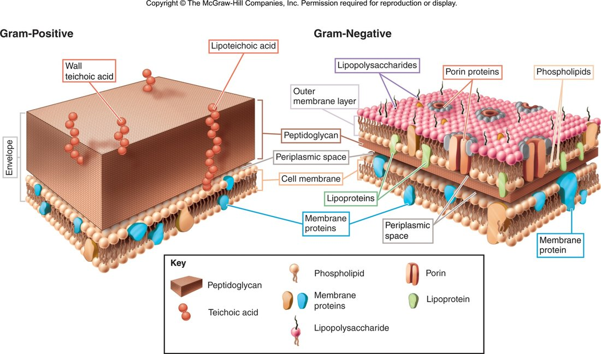
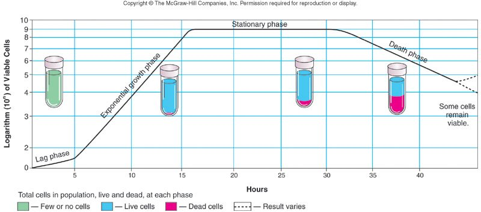
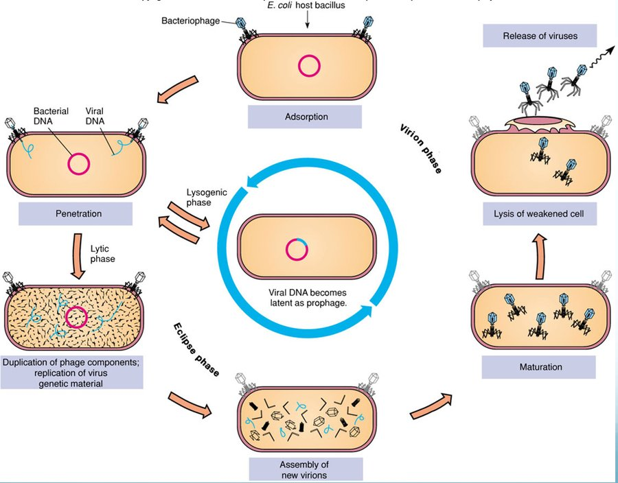
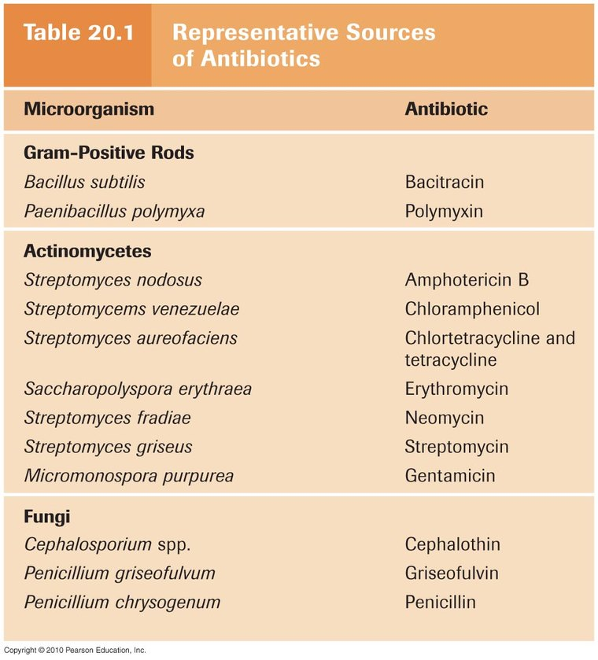
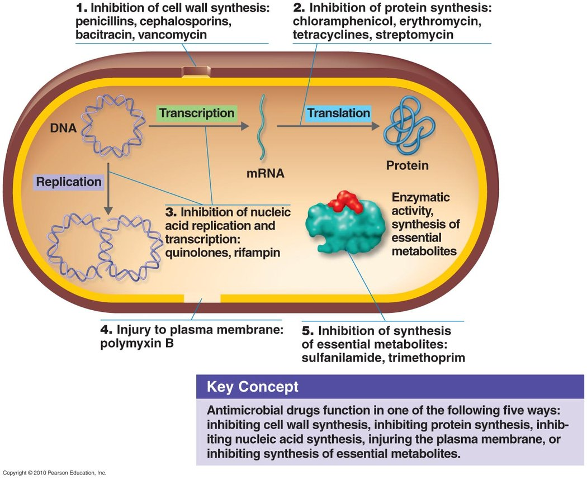

1 · Review of General Microbiology
Instructional Objectives
- Describe an overview of molecular mechanisms related to microbiology that influence health and disease
- Describe the types of infectious pathogens.
- Compare and contrast standard and specialized structures of a bacterial cell.
- Describe bacterial cell morphologies, including Gram-staining characteristics.
- Review the methods utilized in bacterial identification.
- Review the types of culture media used to identify pathogens.
- Review the phases of the bacterial growth curve.
- Differentiate the different processes of phage replication.
- Compare and contrast phage replication to animal virus replication.
- Describe the cytopathic effects of viruses.
- Describe the health implications of nucleic acid mutations.
- Describe the basic mechanisms of microbial control.
- Review the bacterial death curve.
96 minutes with Dr. Webster, across two segments. Both transcripts were read and diffed and every factual claim was checked against the deck. Nothing he said contradicts a slide.
This lecture barely signposts. In 96 minutes there is one explicit de-emphasis and no statement at all about what will or will not be on the exam. That is worth knowing rather than hunting for: treat the thirteen instructional objectives as evenly weighted, because he gave no reason not to. What the recording does add is laboratory technique the deck does not carry.
| He said | What it means for you |
|---|---|
| “And then they have what we call the 70S ribosomes. What’s that S?… It’s a Svedberg unit. Oh, you don’t have to write that down. I’m not going to ask about that.” [20:07] | The only de-emphasis in the lecture, and it is in both transcripts. Know that a prokaryote has 70S ribosomes and a eukaryote 80S — that contrast is on slide 14 and is the basis of selective antibiotic toxicity in Lecture 2. The Svedberg unit itself is out of scope. His aside that 70S is built from 30S and 50S subunits, and that they do not add to 80 because a Svedberg unit reflects sedimentation rather than mass alone, is not on the slides either — useful for Pharmacology later, not something to revise for here. |
| “Does anyone remember a way to test for the organism’s preferred level of oxygen?… a stab inoculation… does it grow at the top, right where the air-agar interface is? Then it’s going to be obligate [aerobe]. Only at the bottom of the tube where there isn’t any oxygen? Obligate anaerobic. Some grow all the way through that tube — facultative anaerobes or aerotolerant anaerobes.” [58:49] | Deck content plus a technique the deck omits. Slide 42 lists oxygen levels among
the chemical requirements for growth, but not how you would determine one. His
thioglycolate stab is the method, and it reads as a picture you could be shown: growth at the top (air–agar interface) → obligate aerobe growth only at the bottom → obligate anaerobe growth throughout the tube → facultative anaerobe or aerotolerant anaerobe Worth holding even though the medium is not named on a slide, because the underlying objective (physical and chemical requirements for growth) is. |
| “In a chemically defined medium you know exactly what’s in that tube… we rarely use these in typical bacterial cultures, they’re typically only used in research… most of the culture media that we use are complex… Trypticase soy agar comes from soybeans. Blood agar.” [1:01:10] | Matches slide 43 — synthetic (chemically defined) against complex or nonsynthetic, which contains at least one ingredient that cannot be chemically defined. His addition is the practical weighting: defined media are a research tool, and what you will actually meet is complex. That makes the slide’s definition concrete rather than abstract: soybean digest and blood are exactly the “not chemically definable” ingredients. |
| “They reproduce by binary fission. So every time they divide, they double… We don’t go from one to two to three, we go one, two, four, eight, sixteen… and it leads to the bacterial growth curve. Remember this?” [1:05:57] | Slides 48–50. The point he draws out is that the curve’s shape is the balance between growth and death, not growth alone — which is what makes the stationary and decline phases make sense rather than being memorised. Growth means an increase in NUMBER, not in cell size. |
| “It was an animal virus, which then mutated to be able to infect humans. We have never seen it before. Our immune system had never seen it before. So why did we have the problem we did?” [1:26:24] | His worked example for the objective on health implications of nucleic acid mutations, using COVID and avian influenza. The chain to hold is animal reservoir → mutation confers human transmissibility → no pre-existing population immunity → severe outbreak. He was explicit that the origin debate is not the point — the mutation and the immunological naivety are. |
Quoted from the 21 August 2026 lecture recording, 96 minutes across two segments, with timestamps. Both transcripts read and diffed. No claim in this lecture contradicts a slide; the items that are his own addition rather than deck content are marked as such.
1.1 · Objective 1 — Molecular mechanisms influencing health and disease
| Mechanism | How it works | Worked example |
|---|---|---|
| Receptor binding | Specific interaction between a pathogen surface protein and a host cell receptor | Influenza uses hemagglutinin to bind sialic acid receptors |
| Adhesion | Initial attachment via proteins, carbohydrates or lipids to specific host receptors | Escherichia coli uses type I fimbriae on mannose receptors, colonising the urinary tract |
| Invasion | Entry into host cells | Salmonella enterica injects effector proteins via a secretion system to build a replication niche |
| Virulence factors | Pathogen molecules enhancing the ability to cause disease — toxins, adhesins, invasins | Staphylococcus aureus adhesins, plus Panton-Valentine leucocidin, which lyses neutrophils, monocytes and macrophages |
| Molecular signalling | Host pattern recognition receptors read pathogen associated molecular patterns | Triggers immune cell activation, cytokine production and regulation of inflammation |
Environmental factors also shape transmission: temperature and humidity (influenza is more stable and transmissible at low temperature and high humidity), where vectors can flourish, and human behaviour — hygiene, vaccination rates and travel patterns.
1.2 · Objective 2 — Types of infectious pathogens
| Prokaryotic | Eukaryotic | |
|---|---|---|
| Cells | Simple, few organelles, no defined nuclear membrane | Complex, many organelles, genetic material within a nuclear membrane |
| Chromosome | Circular, “naked” DNA | Linear, DNA with histone proteins |
| Cell wall | Peptidoglycan | Carbohydrate based |
| Ribosomes | 70S | 80S |
| Members | Bacteria | Fungi, protozoa, helminths |
Viruses sit outside both, as noncellular infectious agents.
| Atypical bacteria | Defining feature | Examples |
|---|---|---|
| Chlamydias | Tiny obligate intracellular; not arthropod-transmitted | Chlamydia trachomatis, Chlamydia psittaci |
| Rickettsias | Tiny obligate intracellular; transmitted by fleas, ticks, lice | Rickettsia rickettsii, Rickettsia prowazekii, Coxiella burnetii |
| Mycoplasmas | Tiny, pleomorphic, lack a cell wall | Mycoplasma pneumoniae |
| Eukaryotic microbe | Key divisions |
|---|---|
| Fungi (100,000 species) | Macroscopic (mushrooms, puffballs) and microscopic — yeasts unicellular (Candida albicans), molds multicellular and filamentous (Penicillium notatum). Differentiated by spore type |
| Protozoa (65,000 species) | Mostly unicellular; differentiated by motility. Two forms: trophozoite (motile feeding) and cyst (dormant resistant). Groups: Mastigophora (flagellates — Trypanosoma), Sarcodina (amoebas — Entamoeba), Ciliophora (ciliates — Balantidium), Apicomplexa (essentially nonmotile — Plasmodium) |
| Helminths | Flatworms — no definite body cavity, digestive tract a blind pouch; cestodes (tapeworms), trematodes (flukes). Roundworms (nematodes) — complete digestive tract, protective cuticle, spines and hooks |
1.3 · Objective 3 — Standard and specialized bacterial structures
| Structure | Type | Function |
|---|---|---|
| Flagellum | Specialized | True directional motility |
| Pilus | Specialized | Coded by a plasmid; used in bacterial conjugation |
| Fimbriae | Specialized | Adhesion to membrane surfaces |
| Glycocalyx | Special | Capsule or slime layer — biofilm production, prevents desiccation, prevents phagocytosis (a factor of pathogenicity; Streptococcus pneumoniae) |
| Plasmids | Internal | Small circular double-stranded DNA, free or integrated, not essential to growth. May encode antibiotic resistance, tolerance to toxic metals, enzymes and toxins |
| Endospores | Internal | Survival mechanism — genetic material in a resistant coat, very low metabolism. Genera: Bacillus, Clostridium |
| Inclusions | Internal | Storage or waste — phosphate, oil droplets |
1.4 · Objective 4 — Morphology and Gram staining
Three shapes, and the lecture is explicit that shape matters for identification: cocci (spherical), bacilli (rod), and spiral (helical, comma, twisted rod, spirochete).
Peptidoglycan is a polymer of alternating N-acetyl glucosamine and N-acetyl muramic acid, crosslinked by a short peptide bridge between the terminal D-alanine and the penultimate diamino-containing amino acid. Crosslinking is catalyzed by transpeptidases — the target of beta lactam antibiotics. The link can be direct, or indirect through a pentaglycine spacer as in Staphylococcus aureus.

| Gram stain step | Reagent | Time |
|---|---|---|
| 1 | Crystal violet | 1 min |
| 2 | Gram's iodine | 1 min |
| 3 | Acetone alcohol (decolorize) | ~10 sec — the most critical step, and the one most affected by technical variation in timing and reagents |
| 4 | Safranin | 1 min |
| Gram positive | Gram negative | |
|---|---|---|
| Wall | Thick homogenous peptidoglycan, 20–80 nm, with teichoic and lipoteichoic acid and surface proteins | Outer membrane (asymmetric bilayer, outermost layer lipopolysaccharide), periplasmic space, thin peptidoglycan shell, inner cytoplasmic membrane |
| Stain | Retains crystal violet → purple | Loses crystal violet → red from safranin counterstain |
| Strength | Physically strong — resists temperature, pH, osmotic pressure | Chemically strong — resists disinfectants, antibiotics |
1.5 · Objectives 5 & 6 — Identification methods and culture media
Methods of bacterial identification: microscopic morphology · macroscopic morphology (colony appearance) · physiological and biochemical characteristics · chemical analysis · serological analysis · genetic and molecular analysis (guanine plus cytosine base composition, deoxyribonucleic acid analysis with genetic probes, nucleic acid sequencing and ribosomal ribonucleic acid analysis).
Requirements for growth divide into chemical — water, energy nutrients (carbohydrates, proteins, lipids), vitamins, minerals, oxygen levels — and physical — temperature, pH, osmotic pressure.
| Media type | Definition |
|---|---|
| Synthetic (chemically defined) | Pure organic and inorganic compounds in an exact chemical formula |
| Complex / nonsynthetic | At least one ingredient that is not chemically definable |
| General purpose | Grows a broad range of microbes; usually nonsynthetic |
| Enriched | Complex organic substances — blood, serum, haemoglobin, or special growth factors for fastidious microbes |
| Selective | Contains agents that inhibit some microbes and encourage the desired ones |
| Differential | Allows several types to grow and displays visible differences between them |
The categories combine: blood agar is enriched and differential (gamma, beta and alpha haemolysis); mannitol salt agar is selective and differential.
1.6 · Objective 7 — The bacterial growth curve
Growth means an increase in number, not size, by binary fission — which is why it is exponential rather than arithmetic.

| Phase | What is happening |
|---|---|
| Lag | Flat period of adjustment and enlargement; little growth |
| Exponential growth | Maximum growth, continuing as long as nutrients and environment allow. Most vulnerable to control methods here — the lecture's example is penicillin |
| Stationary | Rate of growth equals rate of death, from depleted nutrients and oxygen and excretion of organic acids and pollutants |
| Death | Limiting factors intensify; cells die exponentially in their own wastes |
1.7 · Objectives 8 & 9 — Phage and animal virus replication
All viruses have capsids — protein coats enclosing and protecting the nucleic acid — which may be helical, icosahedral or complex. They contain either deoxyribonucleic acid or ribonucleic acid, and may have an envelope or spikes.

| Step | What happens |
|---|---|
| 1 Adsorption | Binding of virus to a specific molecule on the host cell |
| 2 Penetration | Genome enters the host cell |
| 3 Replication | Viral components produced |
| 4 Assembly | Viral components assembled |
| 5 Maturation | Completion of viral formation |
| 6 Release | Viruses leave the cell to infect others |
| Lytic cycle | Lysogenic cycle |
|---|---|
| Rapid takeover of bacterial metabolism Multiple virus copies produced Destruction of the host cell Generalized transduction — random pieces of host DNA may be transmitted to other bacteria |
Integration of viral genes as prophage May acquire new traits — e.g. the ability to make a toxin Immune to reinfection Viral genes replicated with the host cell Specialized transduction — all cells carry the same host DNA |
1.8 · Objective 10 — Cytopathic effects of viruses
Virus-induced damage to cells: changes in size and shape · cytoplasmic inclusion bodies · nuclear inclusion bodies · cells fusing to form multinucleated cells · cell lysis · alteration of deoxyribonucleic acid, which may activate oncogenes · transformation of cells into cancerous cells.
Radiation and chemical exposure can activate oncogenes by the same route, which is why this slide links infection to malignant transformation rather than treating them separately.
1.9 · Objective 11 — Health implications of nucleic acid mutations
A mutation is a change in the base sequence of the genome which may impact the phenotype. Mutations occur naturally at a low level but may be induced by radiation, chemicals or viruses, and may be beneficial, neutral or deleterious.
| Route | Mechanism |
|---|---|
| Transformation | Taking up naked DNA from the environment |
| Conjugation | Cell to cell transmission of DNA from a plasmid |
| Transduction | Transmission of genetic material by viral vector |
| Where the mutation is | Health implication |
|---|---|
| Bacteria | New traits — resistance to antibiotics or other control methods, ability to produce toxins or other virulence factors |
| Viruses | High mutation rates change surface antigens and transmission factors. Changing surface properties may weaken or eliminate immunity from vaccination or prior exposure; previously host-specific animal viruses can cross to humans, where immunity is unlikely to exist |
| Human hosts | Chemical or radiation exposure may transform normal cells to cancer cells; oncogenic viruses may do the same; viruses may affect immune cells (human immunodeficiency virus with acquired immunodeficiency syndrome, autoimmune disorders) |
1.10 · Objectives 12 & 13 — Microbial control and the death curve
Aseptic or sterile means removal of all forms of microbial contamination; disinfection means elimination of some. Depending on circumstances, lowering numbers rather than total elimination may be good enough.
Two basic mechanisms: alteration of membrane permeability, and denaturation of proteins and nucleic acids.
| Physical control | Detail |
|---|---|
| Temperature | High can kill; low will NOT — it only slows growth. Dry heat (ovens); wet heat (boiling, autoclave, pasteurization); refrigeration and freezing for preservation |
| pH | Most pathogens prefer neutral, so acid or base inhibits — pickling |
| Osmotic pressure | Increase sugar or salt concentration |
| Filtration | For heat-sensitive solutions — vaccines, sera, beer |
| Radiation | Ionizing (X-ray, gamma) and non-ionizing (ultraviolet) |
| Chemical control | Detail |
|---|---|
| Disinfectants | Used on inanimate objects — Lysol |
| Antiseptics | Used on tissues — Listerine mouthwash |
| True chemical sterilants | Very few. Ethylene oxide (plastics, spices); beta propiolactone (vaccines, tissue grafts, surgical instruments) |
| Adequate for purpose | Halogens such as chlorine or bromine; alcohol |
Antimicrobial chemotherapeutic agents should have selective toxicity — working against the microbial agent without harming the host. Synthetic agents include the sulfa drugs, made from coal tar dyes; antibiotics are substances naturally made by one microorganism against another, such as penicillin from the Penicillium mold, active against Gram-positive bacteria.
Source: Lecture 1 — Review of General Microbiology (Dr. Webster), Slides 1–70, and the PAJ 5200 syllabus instructional objectives.
2 · Antibiotics and Resistance
Instructional Objectives
- Describe major historical events in microbial control.
- Describe criteria for drug selection for prokaryotes and eukaryotes.
- Define therapeutic index including calculations and significance.
- Discuss the effect of drug clearance on dosing schedule.
- Compare and contrast antibiotics and the organisms of major antibiotic drug lines.
- Compare and contrast the basic mechanisms of action of antimicrobial agents and give examples of each.
- Describe mechanisms of drug resistance.
- Describe other potential problems with antimicrobial therapy.
2.1 · Objective 1 — Major historical events in microbial control
| When | Who / what |
|---|---|
| 350–550 AD | Tetracycline traces in Sudanese Nubian skeletal remains — from beer made with fermented grain containing Streptomyces |
| 1600s | Cinchona bark used for malaria and febrile conditions (quinine) |
| 1870 | Burdon-Sanderson: culture fluid covered with mould did not grow bacteria |
| 1877 | Pasteur: anthrax bacilli inhibited by mould growth |
| 1897 | Duchesne healed typhoid-infected guinea pigs with Penicillium |
| 1909 | Ehrlich — drugs as “magic bullets”; developed arsphenamine (salvarsan) against Treponema pallidum |
| 1928 | Fleming — inhibition of Staphylococcus on plates contaminated with Penicillium |
| 1935 | Domagk — sulfonamides from coal tar dyes |
| 1939 | Florey and Chain — produced a stable clinical form of penicillin |
| 1943 | Waksman — Streptomyces produce antibiotics; coined the term, discovered over twenty |
| 1945 | Fleming, Florey and Chain share the Nobel prize in medicine (Waksman's follows in 1952) |
2.2 · Objective 2 — Criteria for drug selection
| Term | Definition |
|---|---|
| Chemotherapy | The use of drugs to treat a disease |
| Antimicrobial drug | Interferes with the growth of microbes within a host |
| Antibiotic | A substance produced by a microbe that, in small amounts, inhibits another microbe |
| Selective toxicity | Kills harmful microbes without damaging the host — achieved by targeting processes or structures the pathogen has and the host does not |
| Bactericidal | Bacteriostatic | |
|---|---|---|
| Effect | Kills organisms directly | Inhibits growth |
| Measure | Minimal bactericidal concentration — the minimum level killing 99.9% of test organisms | Minimal inhibitory concentration — the minimum level inhibiting growth |
What makes a good agent — there is no perfect drug, but the lecture lists: selective toxicity · favourable pharmacokinetics (reaching the target site at an effective concentration) · appropriate spectrum of activity (broad = large range of organisms, narrow = small) · lack of side effects · low direct toxicity · low potential for hypersensitivity · good therapeutic index · little resistance development.
Choosing the agent in practice: the disk-diffusion (Kirby Bauer) method reads a zone of inhibition against a chart correcting for concentration, molecular weight and other diffusion factors. The E test (“minimal inhibitory concentration on a stick”) reads that value directly in micrograms per millilitre, where the zone of inhibition meets the strip.
2.3 · Objectives 3 & 4 — Therapeutic index and drug clearance
| Therapeutic window | The range of plasma concentrations spanning the minimum concentration for clinical efficacy and toxicity |
| Therapeutic index | A calculation assessing the safety and efficacy of a drug: TI = maximum tolerated dose ÷ minimum inhibitory concentration = TD50 (median toxic dose) ÷ ED50 (median effective dose) |
| Drug clearance | Renal clearance + hepatic clearance + clearance from all other tissues |
2.4 · Objective 5 — Drug lines and their producing organisms

| Drug | Produced by |
|---|---|
| Penicillin | Penicillium chrysogenum (now P. notatum) |
| Cephalosporins | Cephalosporium acremonium |
| Bacitracin | Bacillus subtilis |
| Vancomycin | Amycolatopsis orientalis (formerly Nocardia orientalis) |
| Chloramphenicol | Streptomyces venezuelae |
| Streptomycin | Streptomyces griseus |
| Neomycin | Streptomyces fradiae |
| Gentamycin | Micromonospora purpurea — not a Streptomyces |
| Tetracyclines | Streptomyces aurofaciens |
| Erythromycin | Saccharopolyspora erythraea |
| Polymyxin B | Paenibacillus polymyxa |
| Rifamycin | Amycolatopsis rifamycinica |
| Amphotericin B | Streptomyces nodosus |
| Nystatin | Streptomyces noursei |
| Quinolones, sulfonamides | Artificially produced — sulfonamides from coal tar dyes |
2.5 · Objective 6 — Mechanisms of action

| Target | Agent | Precise mechanism |
|---|---|---|
| Cell wall synthesis | Penicillins | Bind penicillin-binding proteins; inhibit transpeptidase (blocking cross links); produce autolysins (breakdown without synthesis) |
| Cephalosporins | Similar to penicillin's transpeptidase action. 1st gen narrow/Gram-positive → 2nd extended to Gram-negative → 3rd includes pseudomonads, injected → 4th oral | |
| Bacitracin | Interferes with bactoprenol, the transporter carrying peptidoglycan monomers across the membrane, preventing dephosphorylation → osmotic lysis. Topical only, too toxic parenterally | |
| Vancomycin | Glycopeptide binding NAG/NAM subunits, preventing incorporation. “Last line” against resistant Staphylococcus aureus | |
| Isoniazid / ethambutol | Mycobacteria have different walls: isoniazid inhibits mycolic acid synthesis, ethambutol its incorporation | |
| Protein synthesis | Chloramphenicol | Binds 50S; inhibits peptide bond formation. Broad spectrum |
| Aminoglycosides | Change the shape of the 30S subunit → inaccurate reading of messenger RNA codons. Broad spectrum | |
| Tetracyclines | Interfere with transfer RNA attachment. Broad spectrum | |
| Streptogramins | Two components acting together on the 50S subunit. Gram-positives | |
| Erythromycin | Binds 50S; prevents amino acid translocation from transfer RNA to the ribosomal binding site. Gram-positives | |
| Plasma membrane | Polymyxin B | Disrupts the outer membrane of Gram-negatives and the inner membrane by attaching to lipid components. Topical, with bacitracin and neomycin over the counter |
| Nucleic acid synthesis | Rifamycin | Inhibits RNA polymerase. Antituberculosis |
| Quinolones / fluoroquinolones | Inhibit DNA gyrase, preventing unwinding. Urinary tract and hospital acquired infections | |
| Essential metabolites | Sulfonamides | Competitive inhibitors — resemble para-aminobenzoic acid, inhibiting folic acid synthesis. Broad spectrum |
| Antifungal class | Mechanism |
|---|---|
| Polyenes (amphotericin B, nystatin) | High affinity for ergosterol in fungal membranes → pore formation, ergosterol sequestration, reactive oxygen species |
| Echinocandins | Block synthesis of beta-glucan, an essential cell wall component. Intravenous; Candida and Pneumocystis |
| Azoles | Inhibit ergosterol synthesis — membrane |
| Allylamines | For azole-resistant infections |
| Griseofulvin | Inhibits microtubule formation during cell division. Superficial dermatophytes |
| Tolnaftate | Inhibits squalene epoxidase → blocks ergosterol synthesis; distorts hyphae |
| Flucytosine | Cytosine analog — interferes with RNA synthesis and causes miscoding |
| Antiviral strategy | Example / detail |
|---|---|
| Nucleoside and nucleotide analogs | Remdesivir binds viral RNA-dependent RNA polymerase and terminates transcription prematurely. Broad activity against Ebola, respiratory syncytial virus and coronaviruses |
| Protease inhibitors | Block cleavage of viral polypeptide precursors into mature enzymes and structural proteins. Human immunodeficiency virus — indinavir, amprenavir |
| Integrase inhibitors | Prevent viral DNA entering the host chromosome, so it is ultimately degraded |
| Attachment / fusion | Block CCR5 — human immunodeficiency virus |
| Neuraminidase inhibitors | Prevent the virus escaping the host to infect others — influenza |
| Uncoating inhibitors | Amantadine — influenza |
| Interferon | Prevents spread to new cells. Alpha interferon in viral hepatitis induces a transition from the replicating to the nonreplicating form. Adding polyethylene glycol gives a finite treatment duration but greater adverse effects |
2.6 · Objective 7 — Mechanisms of drug resistance
Resistance is the ability of a microorganism to avoid an antibiotic's harmful effects by destroying it, transporting it out of the cell, or undergoing changes that block its effects — three routes that reappear below as the biochemical mechanisms.
| Genetic mechanisms | Cellular and biochemical mechanisms |
|---|---|
| Random genetic mutation Plasmid swapping during conjugation Movement of transposons to plasmids or chromosomes Transduction by bacteriophages Transformation (genes from a recently killed cell) Binary fission shares any of the above |
Drug does not reach the active site: decreased permeability (beta-lactams, quinolones) · decreased transport (aminoglycosides) · increased efflux (tetracyclines, quinolones) Drug inactivation: beta-lactamases, aminoglycoside modifying enzymes Target modification: gyrase modification Bypass of target: vanA, vanB, trimethoprim resistance |
Biofilms enhance resistance three ways: a physical and chemical barrier limiting dissemination and sequestering antibiotics; organisms within are metabolically less active and so less susceptible; and close spatial relationship enhances resistance gene transfer.
Behaviours that drive resistance: misuse or overuse · outdated or weakened antibiotics · using antibiotics for the common cold and other inappropriate conditions · failing to complete the prescribed regimen · using someone else's leftover prescription. Wider contributors include antibiotics in animal feed, environmental warming, and possible correlations with pesticide use and microplastic contamination. Tracking is via the National Antimicrobial Resistance Monitoring System — an interagency partnership monitoring humans (Centers for Disease Control and Prevention), retail meats (Food and Drug Administration) and food animals (United States Department of Agriculture).
2.7 · Objective 8 — Other problems with antimicrobial therapy
| Problem | Detail |
|---|---|
| Superinfection | Secondary infection following broad spectrum antibiotics, which reduce normal flora and let opportunists take hold. Predisposed by corticosteroids, leukaemia, human immunodeficiency virus, systemic lupus, diabetes. Typical organisms: Candida albicans, Clostridioides difficile, hepatitis C virus, human immunodeficiency virus, Aspergillus, resistant staphylococci |
| Hypersensitivity | Most often beta lactams (penicillin, cephalosporins), also quinolones. Immediate or delayed; hives through to anaphylactic shock |
| Resistance | See 2.6 above |
| Direct toxicity — high serum levels of some antibiotics are directly toxic | |
|---|---|
| Aminoglycosides | Renal and auditory toxicity |
| Sulfamethoxazole | Hyperkalaemia |
| Ciprofloxacin | Seizures |
| Doxycycline | Oesophageal ulcerations |
| Tetracycline | Tooth discoloration — binds calcium during tooth development |
| Chloramphenicol | Aplastic anaemia |
| Amphotericin B | Renal and hepatic toxicity |
| Chloroquine | Cardiovascular effects, electrolyte derangements with dysrhythmias |
Drug combinations are one approach to resistant organisms, with three possible results: indifference (no interaction), synergism (combined effect greater than either alone) and antagonism (combined effect less than either alone).
The future: antimicrobial peptides (nisin from lactic acid bacteria, magainin from frogs, cecropin from moths) · targeting biofilm organisms · antisense agents — complementary DNA binding a pathogen's virulence genes to prevent transcription, such as fomivirsen for cytomegalovirus retinitis · phage therapy.
Source: Lecture Number 2 — Antibiotics and Resistance (Dr. Webster), Slides 1–81, and the PAJ 5200 syllabus instructional objectives.
3 · Microbe-Human Interactions
Instructional Objectives
- Define resident flora
- Summarize the steps in the progression of an infectious disease
- Differentiate between bacterial endo and exo toxins
- Diagram the stages in the course of an infection
- Differentiate between clinical manifestations of an infectious illness
- Describe reservoirs of disease
- Describe the common sources and mitigation methods related to nosocomial infections.
3.1 · Objective 1 — Resident flora
Resident flora includes bacteria, fungi, protozoa, viruses and arthropods. Most areas of the body in contact with the outside environment harbour resident microbes; the large intestine has the highest numbers, mainly strict or facultative anaerobes. Internal organs and tissues are a different matter.
| Region | What lives there |
|---|---|
| Skin | Staphylococci, Corynebacterium, Propionibacterium, yeasts, Mycobacterium smegmatis |
| Mouth | Aerobic streptococci are the most common oral residents |
| Large intestine | The highest bacterial numbers in the body — 10–30% of faecal volume is bacteria |
| Respiratory tract | Staphylococcus aureus, Neisseria meningitidis. The LOWER respiratory tract is essentially sterile — and if it is not, bad things happen |
| Urogenital tract | In females the flora responds to hormonal change; the urinary tract should be sterile except a short portion of the urethra. Same in males |
Normally sterile sites and fluids: heart and blood vessels · kidneys and bladder · brain and spinal column · middle and inner ear · interior of the eyes · blood and cerebrospinal fluid · urine in the kidneys and bladder · amniotic fluid surrounding the fetus.
3.2 · Objective 2 — The progression of an infectious disease
The sequence the deck builds, step by step:
| Step | What it means |
|---|---|
| 1. A pathogen with the capacity to cause disease | True (frank) pathogens cause disease in healthy people with normal defences — influenza and rabies viruses, the plague bacterium, the malarial protozoan. Opportunistic pathogens cause disease when defences are compromised, or when they grow somewhere unnatural to them — sometimes it is the patient's own flora doing the attacking |
| 2. A weakened host | Age (elderly, young children, premature infants) · genetic or acquired immunological defects · immunosuppressing drugs and organ transplants · stress · chronic conditions such as liver disease or diabetes · inflammation · primary infections already present. Many of these are what you would write as comorbidities |
| 3. A portal of entry | Skin · gastrointestinal tract · respiratory tract · urogenital tract · conjunctiva · pregnancy and birth. Agents are exogenous (from outside) or endogenous (from within) |
| 4. Enough of them | The infectious dose — see below |
| 5. Adhesion | Fimbriae (attachment pili) · flagella · adhesive slimes or capsules (dextran slime, glycocalyx) · suction disks of protozoans · viral spike or capsid proteins · hooks and barbs of helminths and insect larvae |
| 6. Virulence factors | Exoenzymes, toxigenicity, antiphagocytic factors — see 3.3 |
| 7. A pattern of infection | Localized, systemic, mixed, primary, secondary, superinfection — see 3.4 |
| 8. A portal of exit | How the pathogen departs the host, and therefore how it reaches the next one |
Infectious dose (ID) is the minimum number of microbes or viral particles required for infection, usually expressed as ID50 — the dose sufficient to infect 50% of a given population. A SMALL ID50 means GREATER virulence, and therefore a greater degree of pathogenicity.
| Organism | Infectious dose |
|---|---|
| Measles | 1 virus particle |
| Mycobacterium tuberculosis | 10 bacteria |
| Smallpox | 10–100 viral particles |
| Bubonic plague | 100–500 bacterial cells |
| SARS-CoV-1 | about 280 viral particles (animal study) |
| Influenza A | about 790 viral particles |
| Gonorrhoea | 1,000 bacterial cells |
| Cholera | 100,000,000 bacterial cells |
3.3 · Objective 3 — Endotoxins against exotoxins
| ENDOtoxin | EXOtoxin | |
|---|---|---|
| What it is | Lipid A of the lipopolysaccharide | Proteins |
| Which bacteria | GRAM-NEGATIVE only — it is part of their outer membrane | Certain gram-positive AND gram-negative bacteria |
| Released how | From LYSED or DAMAGED bacteria | SECRETED by LIVING bacteria |
The three virulence factor groups the deck names:
| Group | What it does | Examples |
|---|---|---|
| Exoenzymes | Attack host defences to allow deeper invasion | Mucinase, hyaluronidase, coagulase, bacterial kinases |
| Toxigenicity | The capacity to produce toxins, grouped by the tissue targeted | Neurotoxins, enterotoxins, hemotoxins, nephrotoxins |
| Antiphagocytic factors | Kill or avoid phagocytes | Leukocidins (“-cidin” = to kill) destroy leukocytes; capsules let the pathogen avoid phagocytosis or resist digestion inside a phagocyte |
3.4 · Objective 4 — The stages in the course of an infection
| Pattern | Definition | Example |
|---|---|---|
| Localized | Microbes enter and remain confined to a specific tissue | Boils, warts |
| Systemic | Spreads to several sites and tissue fluids, usually through the bloodstream | Measles, chicken pox, anthrax, rabies |
| Focal | An agent breaks loose from a local site and spreads | — |
| Mixed | Several microbes grow simultaneously at the infection site | — |
| Primary | The initial infection | — |
| Secondary | Another infection by a different microbe complicating the first | A bacterial lung infection on top of a viral upper respiratory infection |
| Superinfection | A secondary infection resulting from disruption of the natural microflora | Antibiotic therapy for strep throat that results in a vaginal yeast infection |
3.5 · Objective 5 — Clinical manifestations
| Sign | Symptom | |
|---|---|---|
| Whose evidence | OBJECTIVE, as noted by an observer | SUBJECTIVE, as sensed and described by the patient |
| Precision | Often more precise, and may be measured by a clinician | Reported, not measured |
| The deck's example | An inflamed pharynx | A sore throat |
Sequelae are long-term or permanent damage to tissues or organs — paralysis from polio, blindness from gonococcal conjunctivitis, sterility from syphilis or another genital infection, deafness from meningitis, arthritis from Lyme disease.
3.6 · Objective 6 — Reservoirs of disease
A reservoir is the primary habitat from which a pathogen originates. It may be living or nonliving.
| Type | What the deck says |
|---|---|
| Living — symptomatic | Someone with an obvious, active infection is likely contagious |
| Asymptomatic carriers | May be humans or animals |
| Passive carriers | Medical or dental personnel — carrying the organism without being infected by it |
| Vectors | A live animal that transmits infectious disease — mosquitoes, fleas and ticks; also flies, fruit flies and cockroaches |
| Nonliving | Soil and water |
Zoonosis (plural zoonoses): infections of animals may spread to humans, and vice versa. They can be bacterial, viral, fungal or protozoan in origin — the category is defined by the reservoir, not the organism. A zoonotic infection cannot be completely eliminated without also eradicating the animal reservoir.
| Route | Examples |
|---|---|
| Direct — horizontal | Direct personal contact: kissing or sexual |
| Direct — vertical | Mother to child, transplacental or during vaginal birth |
| Direct — droplet | Close personal contact including saliva, vomit, faeces or blood |
| Direct — biological vectors | Mosquitoes, fleas, ticks |
| Indirect | Vehicles and fomites (inanimate objects), and airborne droplet nuclei |
3.7 · Objective 7 — Nosocomial infections
Nosocomial infections, also written HAI (hospital-acquired infections), are diseases acquired or developing during a hospital stay. They may prolong the stay, or end in death.
| Facet | Content |
|---|---|
| Most common sites | Urinary tract, respiratory tract, and surgical incisions |
| Most common organisms | Gram-negative: Escherichia coli, Pseudomonas, Klebsiella. Gram-positive: staphylococci and streptococci. Fungi: yeasts. The deck notes the wider list goes by the acronym ESKAPE |
| Mitigation | Universal precautions for sample collection and patient care — based on the assumption that ALL patient specimens are possibly infectious |
3.8 · Epidemiology and Koch's postulates
Not separate objectives, but taught in this deck and fair game. Epidemiology is the study of the frequency and distribution of disease and other health-related factors in human populations. Reportable (notifiable) diseases must be reported to public health authorities; in the United States the CDC (Centers for Disease Control and Prevention) publishes the Morbidity and Mortality Weekly Report.
| Measure | Counts | Expressed as |
|---|---|---|
| Prevalence | EXISTING cases, against the entire population | Usually a percentage |
| Incidence | NEW cases over a time period, against the general healthy population | A count over time |
| Mortality rate | DEATHS due to a certain disease | Per 100,000 |
| Morbidity rate | CASES — people afflicted | Per 100,000 |
Over the last hundred years the death rate from infectious disease has dropped while morbidity has remained relatively high. People stopped dying of these illnesses; they did not stop getting them.
| Pattern | Definition |
|---|---|
| Endemic | A relatively steady frequency over a long period in a particular geographic location — often because the reservoir is present |
| Sporadic | Occasional cases at irregular intervals |
| Epidemic | Prevalence increasing beyond what is expected for that population |
| Pandemic | A global epidemic |
Koch's postulates (1880s):
- Find evidence of a particular microbe in every case of a specific disease
- Isolate it from an infected subject and cultivate it artificially in the laboratory
- Inoculate a susceptible healthy subject and observe the resultant disease
- Re-isolate the agent from the newly infected subject
They do not work well for all pathogens. Mycobacterium leprae and Legionella pneumophila are the two the deck names — step 2 is the sticking point when an organism cannot be cultivated artificially. Today they are of limited use, though still applied to bacterial, fungal and protozoan pathogens.
Molecular Koch's postulates (Falkow, 1988) exist because viruses and prions routinely break all the old rules:
- The phenotype or property under investigation should be associated with pathogenic strains or species
- Inactivating the gene or genes associated with the virulence trait should produce a measurable loss of pathogenicity
- Reverting the mutated gene should restore pathogenicity
4 · Transmission of Microorganisms
Instructional Objectives
- Describe the chain of infection.
- Describe the relationship between fomite-transmission and nosocomial infections.
- Describe the relationship between fomite-transmission and antibiotic-resistant strains of bacteria and fungi.
Three objectives, and the second and third are both about fomites. That tells you where the weight sits: the chain of infection is the framework, and everything after slide 19 is an argument that non-living surfaces matter more than they look like they should. Roughly half the deck is published studies making that case.
4.1 · The chain of infection
Six links, in order. Break any one and transmission stops — which is the whole point of infection control.
- The infectious agent — and its traits, including whether it is already drug resistant.
- The reservoir, known or unknown.
- The portal of exit from the infected host.
- The mode of transmission to other hosts.
- The portal of entry into the new host.
- A susceptible host — and susceptibility varies between people.
4.2 · Reservoirs, and the four carrier states
Living reservoirs: humans, animals, and — the deck marks both with a question mark — plants and fungi. Non-living reservoirs: soil, water, air, food, and fomites.
Human reservoirs come in four states, and the distinction that matters is whether the person is actually infected:
- Symptomatic and infected — the obvious case.
- Asymptomatic and infected.
- Active carriers — infected, and may or may not show symptoms. Mary Mallon, “Typhoid Mary”, carried Salmonella typhi without symptoms in the early 1900s.
- Passive carriers — NOT infected, but still transmitting. The healthcare or food-service worker with poor hand hygiene.
Active against passive is the distinction to hold. An active carrier has the organism in them; a passive carrier is merely carrying it on them. Both transmit.
4.3 · Zoonoses
Infections of animals that may spread to humans, and the reverse. They can be bacterial, viral, fungal or protozoan. Humans are often the accidental host — plague and anthrax are the examples given — with the lifecycle running through primary and secondary hosts.
Why they cannot be eradicated: you would have to eradicate the animal reservoir too, which is harder still when there are several. And a pathogen that lies dormant in an intermediate host as a fungal spore or protozoan cyst outlasts any campaign against the animal.
Occupational risk is named for veterinary medicine, farm work, landscaping, gardening, zookeeping and slaughterhouse or meat processing work.
| Pathogen | Reservoir | Transmission | Human to human? |
|---|---|---|---|
| Rabies | Mammals | Bite / saliva | Rare — organ transplantation |
| Influenza | Birds, pigs | Respiratory droplet, contact | Yes |
| Ebola | Fruit bats, small primates | Body fluids | Yes |
| Marburg, Nipah | Fruit bats | Body fluids | Yes |
From the recording, not the slides. Rabies is the commonest zoonosis in the United States; malaria is the commonest worldwide — and there is almost no endemic malaria in the United States, though Hawaii has a bird form. Neither ranking appears on any slide, and both are the kind of fact a single question turns on.
4.4 · Vectors, and how they differ from reservoirs
A vector is a living thing capable of transmitting disease — mosquitoes, fleas and ticks; flies, fruit flies and cockroaches.
Reservoir and vector are not the same thing, and the difference can be subtle. For malaria the reservoir may be birds while the vector is a particular species of mosquito. The reservoir harbours; the vector delivers.
4.5 · The modes of transmission
By contact. Direct splits into vertical (mother to child) and horizontal (usually mucous membrane contact — sexual contact, kissing), plus droplets from coughing, sneezing, saliva, blood, sweat and tears. Indirect contact is transmission onto inanimate surfaces first — that is fomite transmission, and it is where the rest of the lecture goes.
By vehicle. Food — gastrointestinal illness is the commonest result. Water — drinking water, and also pools, spas and water parks. Soil — contaminating produce, hands and fingernails; pinworms in children. Air — usually, though not always, an indoor phenomenon, which is why ventilation, filtration and crowding matter.
4.6 · Fomites and hospital-acquired infection
A fomite is a non-living surface or object that may transmit pathogens. Hospital-acquired infection (HAI) costs longer stays, long-term disability, preventable deaths, expense, and risk to both safety and quality of care. It is most threatening to the immunocompromised, paediatric, geriatric and HIV patients, and those with open wounds, burns or recent surgery.
Clinical fomites named: scalpels and syringes; catheters — a particular problem with biofilm-forming Staphylococcus aureus and S. epidermidis; bed rails and gurneys; telephones, remote controls, keyboards and electronic devices; floors, mops, polishers, brooms and dustpans; pillows, bedding, furniture and curtains; and stethoscopes, neckties, stuffed animals, greeting cards and flowers.
And it is not only hospitals — a public restroom, hotel room, cruise ship cabin or aeroplane tray table is a fomite-filled room too.
4.7 · The studies, and what they did not do
Birthday cake — Dawson and colleagues, 2017
Blowing out the candles put about fifteen times more bacteria on the frosting than the no-blow control. The authors never identified the organisms they cultured, though the discussion named several pathogenic genera — and they said nothing about fungi, yeasts or viruses in saliva. Droplet size is the link to face coverings: the candle test is trying to blow one out while wearing one.
Keyboards — Ide and colleagues, 2019
A systematic review of 75 published studies, swabbing keyboards, mice and pads, and portable tablets. Organisms cultured included coliforms such as E. coli and MRSA.
Viral fomites — Boone and Gerba, 2007
Pre-2007 figures: 1.7 million deaths a year from diarrhoeal disease and 1.5 million from respiratory infection. Viruses cause about 60% of human infections — and viral disease cannot be cured with antibiotics, so prevention rests on vaccines and antivirals. Crowded indoor environments consistently increase morbidity and mortality: schools, daycare, nursing homes, offices, hotels, cruise ships and hospitals, especially paediatric wards.
Patient-care items — Kanamori and colleagues, 2017
Soap and sanitiser dispensers, humidifiers, nebulisers, pressure transducers, stethoscopes, suction apparatus, thermometers, ultrasound probes and gel, blood pressure monitors, intravenous pumps and poles, telemetry boxes and wires.
From the recording: results are reported as CFU — colony-forming units — because you cannot know whether a visible colony grew from one cell, a hundred or a thousand. The unit is CFU per gram or per millilitre, and serial dilution works for clinical specimens, urine, faeces, food, water and milk alike.
4.8 · Disinfection, coatings and the history
Five best practices for non-critical surfaces, in order: standardise cleaning policy; select EPA-registered hospital disinfectants; educate ALL staff including environmental services; monitor compliance with feedback; implement no-touch decontamination technology.
The history: Semmelweis in the 1840s — handwashing with chlorine solution by obstetricians. Lister in the 1860s — handwashing and wound treatment with carbolic acid.
Chemical agents — bleach, quaternary ammonium salts, phenolics — work only at the correct concentration and for adequate contact time, and they are toxic. Ozone, high-concentration hydrogen peroxide and steam require the room to be vacant, take time facilities may not have, and can damage surfaces and devices.
Coatings borrow from marine anti-fouling paint — copper, arsenic, mercury and tin compounds since the 1960s. Anti-fouling prevents attachment; antimicrobial kills. A hospital coating should be nontoxic, cost effective, commercially available, stable and durable: plastics, copper or silver alloys, photocatalytic coatings, specialised textiles, micro-patterned hydrophobic surfaces.
4.9 · Fomites and antibiotic resistance
Extensive antibiotic use has driven multi-drug resistance, and MDR, XDR and TDR strains — MRSA and carbapenem-resistant Klebsiella pneumoniae among them — are especially problematic in hospitals. Biofilms are polymicrobial networks resistant to cleaning, heat and drugs; Staphylococcus and Pseudomonas form them.
A fomite carrying a persistent pathogen cannot be told apart from a clean surface. That single sentence is the argument for the whole chapter.
Antiseptics in West Africa — Lompo and colleagues, 2023
Two tertiary hospitals in Burkina Faso and Benin. Contamination was highest in liquid soap — 51 of 69 samples. Risk factors: inconsistent preparation, recycled containers including used soft drink bottles, broken pump dispensers, and “topping up”. Counts above 10,000 CFU/mL were Klebsiella pneumoniae, Pseudomonas aeruginosa and Acinetobacter — all gram-negative — from maternity, neonatology, surgery and internal medicine.
How resistance moves between organisms. Conjugation is the big one: donor and recipient need not be the same genus or species, and once a cell gains a resistance plasmid every one of its offspring has it too. Transformation — competent cells taking up free DNA from the environment — matters less. Transduction requires a bacteriophage as the vector.
Put the two halves together and the third objective answers itself: a contaminated surface keeps resistant organisms in circulation, and conjugation lets them hand that resistance to organisms of an entirely different species.
5 · Host Defenses: Nonspecific Mechanisms
Instructional Objectives
- Review the lines of host defense.
- Differentiate among the chemical, genetic, and physical defense mechanisms in the first line of defense.
- List the key factors involved in innate immunity.
- Describe the recognition system of host defense.
- Describe the roles of the different classes of leukocytes in the second and third lines of defense.
- Describe the role of a white blood count with differential.
- Describe the characteristic components of inflammation.
- Describe the mechanism of pathogenic fever.
- Explain the beneficial and harmful effects of fever.
- Compare and contrast the origin and functions of interferon.
- Discuss the complement system.
Eleven objectives against 93 slides — this is the biggest lecture of the block. Lectures 1 to 4 carry three or four objectives each. Complement alone runs fourteen slides. The temptation is to revise complement and natural killer cells and let the rest slide, which is exactly how the small objectives — the differential white count, the genetic defence, the effects of fever — get lost.
One idea ties it together. The innate system covers an enormous range of organisms without having a receptor for each one. It manages that by recognising patterns shared across pathogen families, not individual organisms. Every receptor, plasma protein and cell below is an instance of that trick.
5.1 · Objective 1 — The lines of defense
Three categories, and three lines. The categories are barriers (physical and chemical), fixed or hard-wired mechanisms (innate), and the adaptive immune response — the one vaccination exploits, and the only one giving long-term protection.
| Line | What it is | Specific? |
|---|---|---|
| First | Physical, chemical, microbiological and genetic barriers that block invasion at the portal of entry | Nonspecific |
| Second | Protective cells, physiological processes and antimicrobial substances | Nonspecific |
| Third | Acquired on exposure to antigens; produces antibodies or defensive cell lines, and creates immunological memory | Specific |
Two of the three are nonspecific, and that is the whole subject of this lecture. Notice also that the first line includes a genetic barrier — an unusual category that becomes concrete at the defensins in 5.3.
5.2 · Objective 2 — The first line: physical, chemical and genetic
The physical list: intact skin, mucous membranes, the ciliary escalator, the lacrimal apparatus, nasal hairs, saliva, urine, sweat, defecation, the expulsion mechanisms (coughing, sneezing, vomiting), and normal flora.
| Barrier | How it works |
|---|---|
| Epidermis | Stratified squamous epithelium. Rapid desquamation physically removes transient flora. Keratin resists invasion because most pathogens lack keratinase. Keratinocytes make antimicrobial peptides, packaged in lamellar bodies and secreted into a waterproof lipid layer |
| Mucous membranes | Line the gastrointestinal, respiratory and urogenital tracts — a much greater area than skin. Thin, permeable, not keratinized, because gas exchange and absorption demand it |
| Mucus | Glycoproteins, proteoglycans, peptides and enzymes. Mucins are the gigantic glycoproteins that give it its protective properties; the gut goblet cell makes it |
| Lacrimal apparatus | Washes the eye, and carries lysozyme — so it is chemical as well as physical |
| Urine | Mechanical flush, plus high osmolality and an inhibitory pH |
| Saliva and sweat | Mechanical flush plus antimicrobial secretions |
Normal flora is both barriers at once, and that is the point of it. Colonisation begins after birth. On the epidermis it is Staphylococcus epidermidis, other coagulase-negative staphylococci, and coryneform bacteria. They compete for living space and nutrients — a physical barrier — and they produce antimicrobial substances — a chemical one.
The atopic dermatitis finding is the cleanest evidence for this. Atopic skin shows dysbiosis with less antimicrobial peptide. When subjects were deliberately colonised with coagulase-negative staphylococci, colonisation by Staphylococcus aureus was diminished. Restoring the residents suppressed the pathogen.
Gut commensals do three things beyond blocking colonisation: they digest substances we cannot, they provide vitamins, and they help develop gut-associated lymphoid tissue.
The chemical list: sebum, the acid mantle of skin, lysozyme (which acts on peptidoglycan), lactic acid and electrolytes in sweat, digestive secretions, semen (spermine, lysozyme, lactoferrin, phospholipase) and vaginal secretions (lactic acid, beta defensin, hydrogen peroxide). Those last two lists are worth keeping apart — they are easy to swap.
5.3 · Objective 3 — Key factors in innate immunity
Plasma proteins that limit infection: the coagulation system, the kinin system, protease inhibitors, defensins, pentraxins, the acute-phase response, inflammation and its cytokines, and complement.
| System | What it does |
|---|---|
| Coagulation | Clot formation limits pathogen mobility and reduces blood and fluid loss. Platelet degranulation releases cytokines that recruit immune cells and drive repair |
| Kinin | An enzymatic cascade producing bradykinin — dilates vessels and relaxes smooth muscle to enhance elimination of pathogens and tissue repair |
| Protease inhibitors | Block microbial proteases that degrade human tissue. One tenth of all serum proteins; alpha-2 macroglobulin is the example |
Defensins are the predominant family of antimicrobial peptides: 30 to 40 amino acids, amphipathic — hydrophobic and hydrophilic regions — which is how they damage membranes. That mechanism sets their range: bacteria, fungi, and ENVELOPED viruses, because an envelope is a membrane.
They are also the only innate components that can neutralise a broad range of microbial toxins by unfolding them, changing their three-dimensional configuration. The deck calls them antichaperones — chaperones fold proteins, these do the reverse.
This is where the “genetic” defence of objective 2 becomes concrete. Individuals carry 2 to 14 copies of the alpha defensin genes and 2 to 12 of the beta. Copy number determines how much protein is made — so how well defended you are is partly inherited. Four of the six alpha defensins sit in neutrophil granules; the other two are made by intestinal Paneth cells.
Pentraxins bind pathogen surfaces and target them for phagocytosis, bridging pathogen to phagocyte much as antibody does. Short pentraxins come from hepatocytes — serum amyloid P component and C-reactive protein; long pentraxins from myeloid, endothelial and epithelial cells.
The acute-phase response runs on one signal: bacteria induce macrophages to produce interleukin 6, which tells liver cells to raise the defensive plasma proteins and lower others, including albumin. C-reactive protein and serum amyloid A rise more than a hundredfold — which is precisely why C-reactive protein is used to diagnose infection, inflammation and tissue damage. It is a pentraxin opsonin.
5.4 · Objective 4 — The recognition system
Recognition has to sort three things, not two: healthy self, non-self, and altered self — tissue damaged or changed by viruses or cancer.
| Term | Meaning |
|---|---|
| PRR | Pattern Recognition Receptor — recognises structural patterns from types of pathogen |
| PAMP | Pathogen Associated Molecular Pattern — the structure on the microbe that a PRR recognises. Marks non-self |
| DAMP | Damage Associated Molecular Pattern — signals cells that are damaged, stressed or virus-invaded. Marks altered self |
Each receptor recognises a pattern shared by a pathogen FAMILY, which is how a limited set of receptors covers a wide range of organisms. Each cell carries a unique combination, which broadens the coverage further. Macrophages are very effective at bacterial and fungal carbohydrates using lectin receptors; natural killer cells at the changed surface proteins of a virus-infected cell.
Where a receptor sits determines what it does, and the Toll-like receptors make the point best:
| Receptor family | Detects | Triggers |
|---|---|---|
| Toll-like — plasma membrane | Many pathogens | Inflammatory cytokines |
| Toll-like — endosomal | Many pathogens | Interferon |
| Scavenger | Microbes — or, with no infection, cellular debris and apoptotic cells | Elimination |
| Retinoic acid inducible gene | Viral RNA | Interferon |
| Cyclic GMP cyclase | Viral DNA | Interferon |
Effector function then runs on cytokines. Some are cached in vesicles and released fast, some must be made on demand, and some are secreted only on cell-to-cell contact. Some are pro-inflammatory and some anti-inflammatory.
5.5 · Objectives 7 and 8 — Inflammation and fever
The five cardinal signs, described by Celsus in the first century: rubor (redness), calor (heat), tumor (swelling), dolor (pain), functio laesa (loss of function).
The inflammasome starts it. When macrophages sense infection, pathogen products drive assembly of a protein structure that converts pro interleukin 1 beta into functional interleukin 1 beta in large quantities. A second cascade opens pores in the macrophage membrane to release it — and that kills the macrophage, by pyroptosis. Mutations in inflammasome genes cause autoinflammatory diseases.
| Cytokine | Effect |
|---|---|
| Interleukin 1 beta | Initiates the cytokine release |
| Tumour necrosis factor alpha | Dilates vessels, raising blood volume — producing heat, swelling, redness and pain |
| Interleukin 6 | Increases temperature |
| CXCL8, CCL2, interleukin 12 | Chemokines — attract other white cells |
Getting the leukocytes out of the blood takes two adhesion steps and a squeeze:
- Rolling — L-selectin on the leukocyte binds vascular addressin CD34 on the endothelium. Transient, so the cell rolls along the surface.
- Firm adhesion — integrin LFA-1 binds the immunoglobulin-like ICAM-1.
- Diapedesis — guided by chemokines, the neutrophil squeezes between endothelial cells to reach the infection.
Endothelial cells help by upregulating adhesion molecules and loosening their tight junctions.
Fever — objectives 8 and 9 together. Interleukin 1 beta, interleukin 6 and tumour necrosis factor alpha act both locally and systemically, and the systemic effect is fever. Its benefits are specific and worth memorising as a list:
- Decreases replication of viral and bacterial pathogens — in bacteria, by starving them of iron
- Increases production and activity of neutrophils
- Enhances T cell proliferation
- Enhances immune signalling
- Enhances tissue resistance to the damaging effects of tumour necrosis factor alpha — protection against the body's own mediator
Tumour necrosis factor alpha is the same molecule doing opposite things at different scales, and this contrast is exam-shaped:
| Released LOCALLY | Released SYSTEMICALLY |
|---|---|
| Increased blood flow and permeability in venules; endothelium becomes adhesive for white cells and platelets; blood in the venules clots, which prevents spread of infection to the blood | Acts on venules in all tissues at once — a state of shock, organ failure, death |
Containment at one site; catastrophe everywhere at once.
5.6 · Objective 11 — Complement
More than thirty proteins, ubiquitous in blood and lymph, circulating as inactive zymogens and activated by cleavage in a cascade. Its activity comes from a unique high-energy thioester bond.
The thioester bond is the mechanism. Activation cleaves C3 into C3a and C3b, exposing the bond on C3b. It then has two fates: attacked by water, it becomes soluble and does nothing; or it reacts with a hydroxyl or amino group on a pathogen surface and attaches. That is complement fixation, and it marks the pathogen for destruction. Meanwhile C3a recruits phagocytes.
| Pathway | Order of activation | Trigger |
|---|---|---|
| Alternative | First — quickest | Nonspecific; deposits C3b at the very beginning of infection |
| Lectin | Second | Nonspecific; induced by infection, takes a little time to become effective |
| Classical | Last | C-reactive protein (innate) or antibody (adaptive) — which is why it belongs to both systems |
All three converge on cleaving C3, which is why the deck calls C3 by far the most important molecule in the cascade — the pathways differ mainly in how they reach it. They were discovered in a different order (classical, alternative, lectin), and the system is called “complement” because it was thought to complement the specific immune system.
Regulation is what keeps it off your own cells, and the four regulators split cleanly:
| Regulator | Type | Effect |
|---|---|---|
| Properdin (factor P) | Plasma | Binds C3 convertase on microbial surfaces — INCREASES activation |
| Factor H + factor I | Plasma | H makes C3b susceptible to cleavage by I, giving iC3b, which cannot form a convertase — reduces activation |
| Decay accelerating factor, membrane cofactor protein | Membrane | Rapidly disrupt C3bBb formed on a human cell surface |
C3b is the opsonin — a protein bound to a pathogen that facilitates phagocytosis. Complement receptor 1 binds it to drive phagocytosis, and does double duty protecting human cells by disrupting C3 convertase.
Then the cascade escalates. C3b binding existing C3bBb makes the alternative C5 convertase, which cleaves C5. C5a recruits neutrophils and is the most potent anaphylatoxin; C5b initiates the membrane attack complex. Human cells are protected from that too — S protein, clusterin and factor J stop C5b, C6 and C7 associating with membranes, and homologous restriction factor and CD59 (protectin) stop C9 joining a complex that has already attached.
The evasion story is worth knowing because of its exception. Streptococcus pyogenes and Staphylococcus aureus cover themselves in sialic acid — which factor H has a binding site for, because it is found on human cells. Factor H binds, and their C3b is readily inactivated. But antibody coats the surface and masks the sialic acid before complement binds, so these bacteria resist complement only when no specific antibody is present. Innate immunity alone is beaten here; innate plus adaptive is not.
5.7 · Objective 10 — Interferon
| Interferon | Made by | Does |
|---|---|---|
| Alpha | Lymphocytes and macrophages | Activates natural killer cells |
| Beta | Fibroblasts and epithelial cells | Assists B and T cell maturation and the inflammatory response |
| Gamma | T cells | Inhibits cancer cells, stimulates B cells, activates macrophages and increases their effectiveness |
All are produced in response to viruses, RNA, immune products and various antigens; they bind cell surfaces and induce expression of antiviral proteins, and they inhibit expression of cancer genes and suppress tumours.
The single most misunderstood point in this section, and the deck states it outright: interferon does not kill viruses. It stops spread to surrounding tissue. It protects the neighbours rather than clearing the infection.
5.8 · Objectives 5 and 6 — Leukocytes and the differential
Learn the percentages — they are what the differential count is read against.
| Cell | % | Appearance | Role |
|---|---|---|---|
| Neutrophils | 55–90 | Lobed nuclei, lavender granules | Phagocytes |
| Eosinophils | 1–3 | Orange granules, bilobed nucleus | Destroy eukaryotic pathogens; minor phagocyte |
| Basophils | 0.5 | Constricted nuclei, dark blue granules | Release potent chemical mediators |
| Monocytes / macrophages | 3–7 | Largest white cells, kidney-shaped nucleus | Phagocytic; housekeeping; antigen presentation; cytokine secretion |
| Lymphocytes | 20–35 | — | B (adaptive humoral), T (adaptive cell-mediated), and non-B non-T including natural killer cells (INNATE) |
Mast cells are related to basophils but nonmotile and bound to connective tissue; whether they share a common progenitor is unsure. A macrophage is the final differentiation of a monocyte, in tissue, and takes special names in particular tissues.
The differential white count totals the number of each type and determines whether they are in normal proportion — proportion, not just total. It is used in diagnosing infection types, inflammation, allergies, immune disorders, leukaemia and myelodysplastic syndrome.
Phagocytosis is done principally by macrophages and neutrophils, and the division of labour matters:
| Macrophage | Neutrophil |
|---|---|
| Long-lived, resides in tissue, has other functions, works as infection begins and raises the alarm | Short-lived dedicated killer, circulates in blood, waits for the macrophage alarm to enter tissue |
The respiratory burst: when the engulfed organism meets the neutrophil granules, NADPH oxidase produces superoxide, which picks up hydrogen ions and raises the pH so the digestive granules can break the organism down. Toxic oxygen species can diffuse out and damage host cells, so phagocytes make enzymes such as catalase to inactivate them.
Neutrophils cannot replenish their granules, so they die. Some are phagocytosed by macrophages. Dead organisms, dead neutrophils and dead tissue form pus. Others undergo netosis — bursting so their DNA and defensive proteins form a neutrophil extracellular trap that catches and kills microbes.
Dendritic cells patrol tissue, take up antigen and carry it to the nearest lymph node for T cells. Whether they arrive mature matters: an immature one fails to make a good connection for activation. Plasmacytoid dendritic cells are professional interferon producers — within six hours of activation, 60% of the cell's transcription is making type 1 interferon.
5.9 · Natural killer cells and the innate lymphoid cells
Five innate lymphoid types: natural killer cells, then ILC1 (intracellular pathogens, holding the line until natural killer cells arrive), ILC2 (mucosal, against large extracellular parasites like worms), ILC3 (extracellular bacteria and fungi, abundant in mucosa, containing gut commensals), and lymphoid tissue inducer cells, which build secondary lymphoid tissue.
Natural killer cells are large lymphocytes with cytotoxic granules, giving innate immunity against intracellular infection. Two effector functions split by subpopulation: CD56 dim kills virally infected cells; CD56 bright secretes cytokines to maintain inflammation. A special CD56 bright group in the uterus works with fetal trophoblasts to enlarge the spiral arteries and enhance blood flow to the fetus — and preeclampsia is postulated to involve abnormal killer-cell immunoglobulin-like receptor activity, more inhibitory than activating.
Their cytotoxicity rises 20 to 100 fold on exposure to interferons alpha and beta. Four cytokines activate them early; interferons favour the cytotoxic function while interleukin 12 favours cytokine production.
The one requirement of a natural killer receptor is that it must inhibit the cell from killing healthy self-cells. Killing is a balance: when a cell is infected, malignant or traumatised its protein expression changes, activating signals outweigh inhibitory ones, and it dies. The cell releases cytotoxic granules inducing apoptosis — the target shrinks, chromatin condenses — and a macrophage clears up.
They cooperate in both directions. Macrophages recruit and activate natural killer cells; those return interferon gamma, which enhances macrophage phagocytosis and cytokine secretion. And if natural killer cells cannot contain the infection, they stimulate dendritic cells to migrate to secondary lymphoid tissue and start an adaptive response — control passes to T cells.
5.10 · Where it happens, and how the two systems fit
Encounters occur in the reticuloendothelial system, extracellular fluid, the bloodstream and the lymphatic system. Lymphatic capillaries reach everywhere except the central nervous system, bone, placenta and thymus, and act as the drain-off system for inflammation as well as providing surveillance.
| Primary lymphoid organs | Secondary lymphoid organs and tissues |
|---|---|
| Produce the adaptive cells: thymus (T cells), bone marrow (B cells) | Where lymphoid cells engage pathogens: spleen, lymph nodes, SALT (skin), MALT (mucosal), GALT (gut — Peyer's patches and appendix), BALT (bronchial) |
The induced innate response fills the gap from four hours to four days. It is still nonspecific — it does not differ by invader — but uses more extensive pattern recognition by macrophages, neutrophils and dendritic cells.
The closing contrast is the one to take into the exam.
- Normal: infection cleared by innate and adaptive together.
- No innate immunity: infections are uncontrolled, and the adaptive response cannot be deployed at all.
- No adaptive immunity: infection is initially controlled by innate immunity but cannot be cleared from the body.
The asymmetry is the point: innate immunity is the prerequisite, not the backup. The deck's evidence that it works is simple — we carry vast populations of resident microbes and are well most of the time — and rare inheritable innate defects cause a substantial reduction in protection.